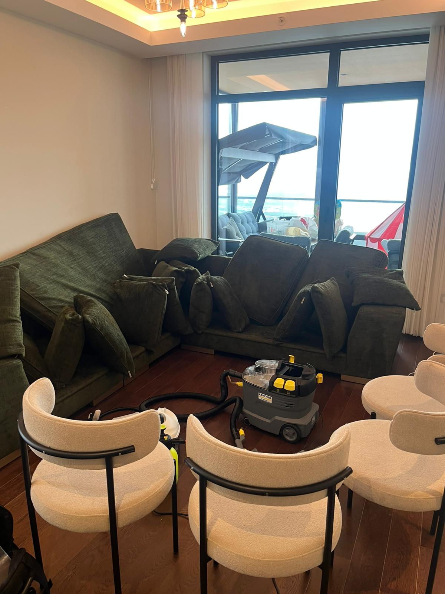
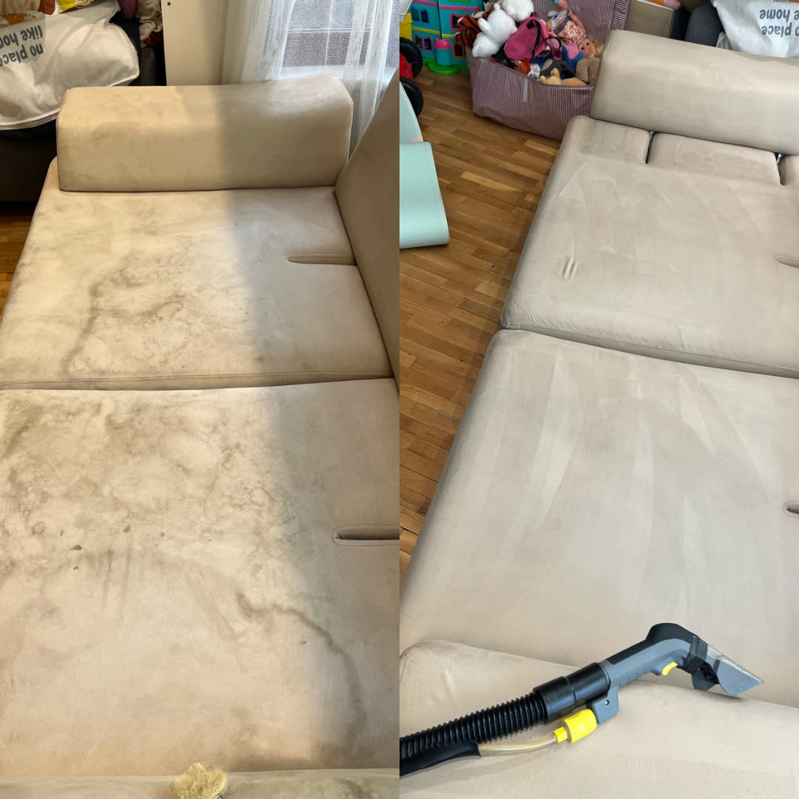
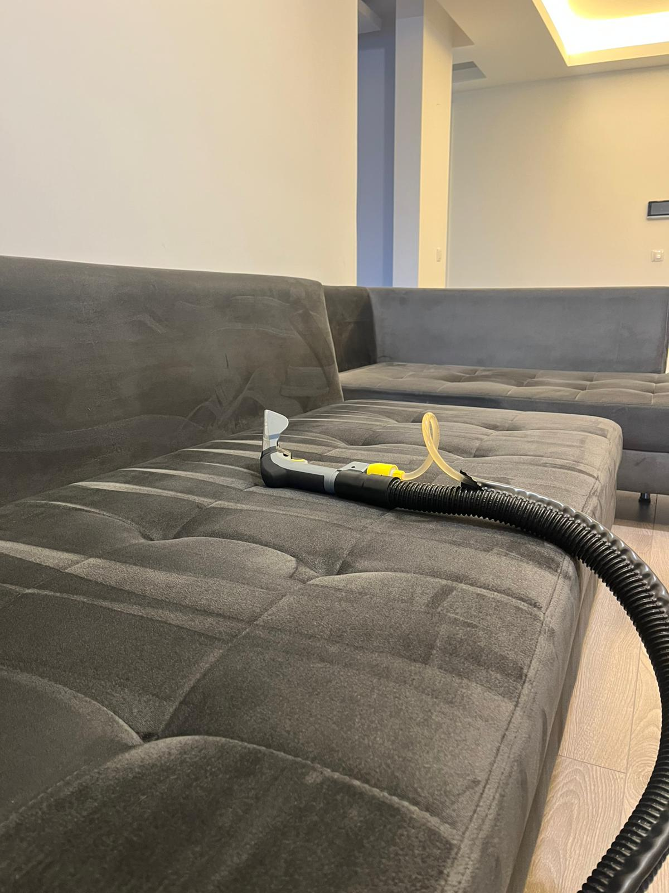
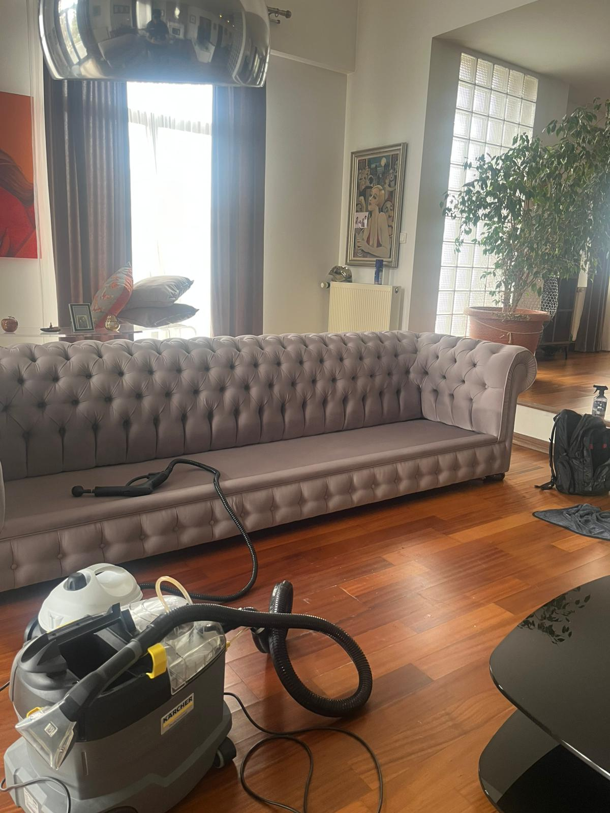

Çayyolu'nun Tercihi Velux Temizlik
Çayyolu koltuk yıkama ihtiyaçlarınızda, bölgenin mimari yapısına ve yaşam standartlarına uygun, sessiz ve profesyonel hizmet sunuyoruz. Evinizdeki ithal kumaşlar, nubuk koltuklar veya hassas deri yüzeyler için her kumaşa özel temizlik protokolleri uyguluyoruz.
💎 Premium Hizmet
Hassas ve değerli kumaşlar için kumaş analizi yaparak en uygun yöntemi seçiyoruz.
🫧 Derin Hijyen
140 derece buhar gücüyle mayt, bakteri ve akar temizliğinde %100 sonuç.
🌿 Bitkisel Çözümler
Kimyasal kalıntı bırakmayan, tamamen bitkisel bazlı şampuanlar kullanıyoruz.
Çayyolu ve çevresinde randevu saatine sadık kalarak, profesyonel ekipmanlarımızla yaşam alanlarınıza ferahlık getiriyoruz. Yüksek vakum gücü sayesinde koltuklarınız aynı gün içinde kurumuş ve kullanıma hazır hale gelir.



